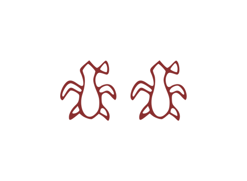
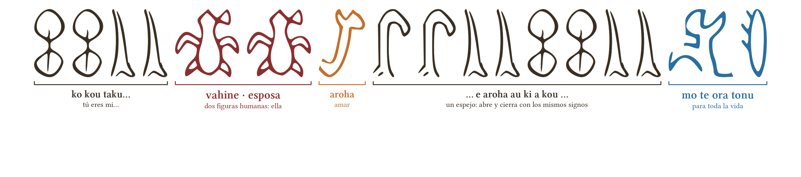
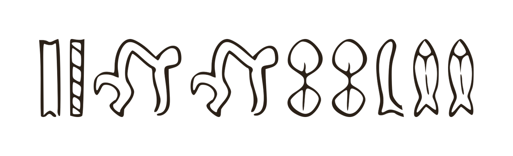
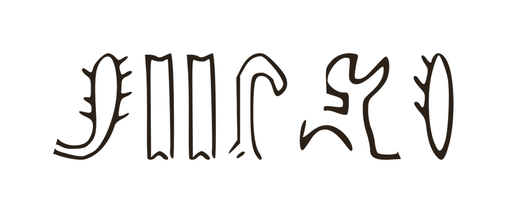

Dijo que sí.
Rapa Nui, frente al mar, con una pregunta escrita en diecisiete glifos

La tablilla de la petición

Ko kou taku vahine, e aroha au ki a kou, mo te ora tonu
«Tú eres mi esposa; te amo para toda la vida.»
Cómo se lee


I te motu, i mua o te moana
«En la isla, frente al mar»
el mar apareció escrito con peces

Mo te ora tonu
«Para toda la vida»
la única frase que dos modelos distintos escribieron igual, glifo por glifo
María Ignacia: mo te ora tonu ❤
Nadie sabe qué decían estos glifos hace siglos. Ella los leyó perfecto.
Glifos: trazados reales del corpus rongorongo (tablillas A–F) · secuencias generadas por un modelo, no traducción histórica · github.com/satisfymath/spectral-submersion